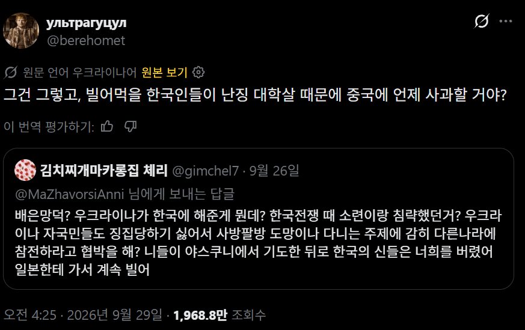
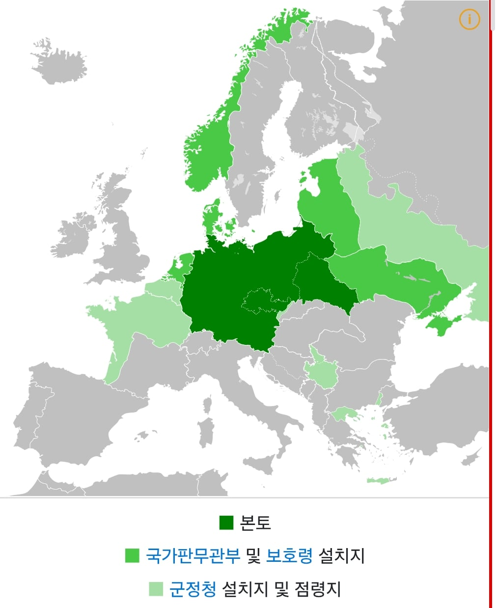
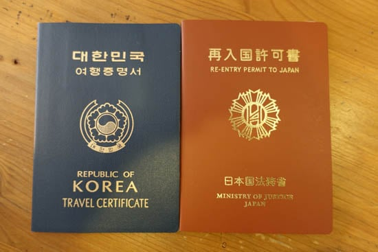

홀로코스트 및 나치 전쟁범죄
-
참고로 우크라이나인들은 소련의 국민이었으며 6.25 전쟁에 레드팀으로 참전도 했는데
이는 일제 강점기 당시 국적도 없었던 조선인들과는 사정이 다르다
일제강점기 당시 조선인들이 일제 국민이 맞았다면

조선적 같은 건 생길 필요도 없었고 싹 일본 국적 부여했을 것
아님 전부 추방하던가


홀로코스트 및 나치 전쟁범죄
-
참고로 우크라이나인들은 소련의 국민이었으며 6.25 전쟁에 레드팀으로 참전도 했는데
이는 일제 강점기 당시 국적도 없었던 조선인들과는 사정이 다르다
일제강점기 당시 조선인들이 일제 국민이 맞았다면

조선적 같은 건 생길 필요도 없었고 싹 일본 국적 부여했을 것
아님 전부 추방하던가
나치든 소련 빨갱이 레드팀이든 하나만 해야하는 거 아님?
나치새끼들이면 소련 식민지 맞고
소련 빨갱이 레드팀이면 극소수 병신이 분탕친 거잖아
왜 뜨거운 아이스 아메리카노같은 소리를 하지